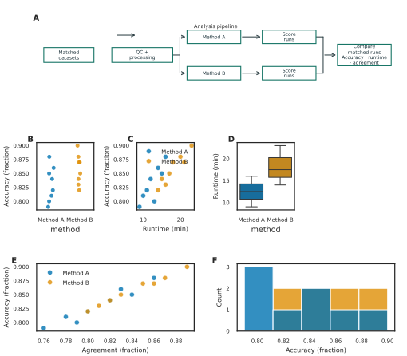

This six-panel storyboard introduces the inputs, quality checks, parallel methods and evaluation before showing accuracy, runtime, agreement and score distributions. Download methods-benchmark.csv. It contains fictional results for two methods on eight matched datasets; each row is one method–dataset run. These values are illustrative, not validation of a real method.

Illustrative finished figure using ktfigure's plot renderer and vector-drawn concepts. Synthetic benchmark data only.
AAnalysis workflowMatched data → QC → methods → comparison
BAccuracyIndividual benchmark runs
CTrade-offRuntime vs accuracy
DRuntimeVariability by method
EAgreementAccuracy vs agreement
FScore distributionOverlapping ranges
Panel A spans the first row to keep the pipeline legible; B–D compare individual results in the second row, with E–F below.
Panel A / Concept figure
Draw a branching analysis pipeline.
Make a left-to-right pipeline from Rectangle boxes: “Matched datasets” → “QC + processing” → branch into parallel “Method A” and “Method B” boxes → “Score runs”. Add a final comparison box for matched datasets and the metrics you actually evaluate.
Use Line segments to connect boxes. Draw the shared input path first, branch into the method lanes, then bring the scored results together. Route connectors through the gaps between boxes; do not run lines beneath text or through box interiors.
Place short Text labels centered inside each box. Keep box sizes, padding and border widths consistent. Label arrows only if the words fit clearly in open space and describe the actual workflow.
Match the actual method: show split, preprocessing, exclusion or validation steps only when they were performed, and put them in the correct order. ktfigure does not currently export text annotations or line arrowheads faithfully; add and inspect these in a vector editor after PDF/SVG export.
Panels B–F / Benchmark evidence
Show the trade-offs, not just a winner.
Load methods-benchmark.csv for each plot and leave unspecified mappings at (none). In Properties, use the same group colours and typography across panels.
Panel / question
Plot and mappings
Why this view?
B · How accurate?
strip; X method, Y accuracy. Label Y: Accuracy (fraction).
Shows individual runs rather than only an average.
C · What is the trade-off?
scatter; X runtime_min, Y accuracy, Hue method. Label axes with units.
Shows speed and accuracy together, including overlap between methods.
D · How variable is runtime?
box; X method, Y runtime_min. Label Y: Runtime (min).
Summarizes spread; with eight runs per method, also consider showing every point.
E · Do metrics agree?
scatter; X agreement, Y accuracy, Hue method. Label axes as fractions.
Checks whether distinct metrics tell a consistent story; association does not establish equivalence.
F · How are scores distributed?
histogram; X accuracy, Hue method. Label X: Accuracy (fraction).
Shows score ranges; bin choice matters, especially with few runs.
The plots do not connect matched pairs. For paired comparisons, calculate per-dataset differences with an appropriate analysis outside ktfigure and state how pairing was handled. Define metrics, data splits, hardware and runtime measurement in the legend; do not claim general performance from this toy benchmark.